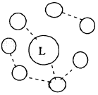
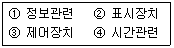
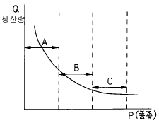
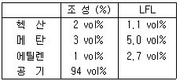
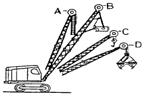

산업안전산업기사 (2003-08-31 기출문제)
1과목: 산업안전관리론
1. 하인리히의 1:29:300의 원칙에서 가장 적합하게 설명한것은?
- 총 재해 330건에 치중해야 한다.
- 29건의 경상의 재해를 제거해야 한다.
- 1건의 사망재해 원인 제거에 치중해야 한다.
- 300건의 무상해 재해원인 제거에 치중해야 한다.
(정답률: 57%)

2. 가죽제 발보호 안전화의 성능시험을 실시할 때 꼭 포함되지 않아도 되는 것은?
- 내압박시험
- 내충격시험
- 내전압시험
- 겉창의 박리시험
(정답률: 39%)
3. 건설 현장에 부착할 안전 표지의 종류가 아닌 것은?
- 금지표지
- 경고표지
- 지적표지
- 안내표지
(정답률: 86%)
4. 데이비스(K.Davis)의 동기부여 이론에서 인간의 성과는?
- 지식 × 기능
- 상황 × 태도
- 인간조건 × 환경조건
- 능력 × 동기유발
(정답률: 54%)
5. 피로가 겹치게 됨으로서 차츰 생산성은 저하되기 시작하며, 따라서 작업자들의 재해 발생 빈도도가 잦아지는데 다음 중 동시에 저하 되는 것은?
- 작업관리
- 동작밀도
- 공정진행
- 생산관리
(정답률: 40%)
6. 다음 중 라인식 안전조직의 특성이 아닌 것은?
- 규모가 작은 사업장에 적용된다.
- 참모식 조직보다 경제적인 조직이다
- 안전관리 전담 요원을 별도로 지정한다.
- 모든 명령은 생산 계통을 따라 이루어진다.
(정답률: 73%)
7. 교육훈련 방법중 강의식 교육의 장점이 아닌 것은?
- 한번에 많은 사람이 지식을 부여받는다.
- 참가자가 능동적으로 참가한다.
- 시간의 계획과 통제가 용이하다.
- 체계적으로 교육할 수 있다.
(정답률: 70%)
8. 다음은 집단토의 방식의 안전교육을 효과적으로 이끌기 위한 조건이다. 틀린 것은?
- 태도와 행동의 변용이 어렵다.
- 상호평가로 자기반성을 촉구한다.
- 스스로 참여하여 학습의욕을 높인다.
- 중지를 모을 수 있는 문제를 구체적으로 발굴한다.
(정답률: 58%)
9. 강도율 "5"의 뜻으로 옳은 것은?
- 1,000인당 5년의 재해 건수
- 1,000인 작업시 5인의 사상자 수
- 1,000시간당 5일의 근로손실
- 100만 시간당 5건의 재해건수
(정답률: 59%)
10. 도수율만 알고도 연천인율을 환산할 수 있다. 이 때는 도수율 × ( )가 연천인율이 된다. 이 때 ( )의 값은?
- 0.4
- 1.4
- 2.4
- 3.4
(정답률: 50%)
11. 안전모의 적용 시험항목은 5가지이며 이는 내관통성시험, 충격 흡수성시험, 내전압성시험, 내수성시험 그리고 한가지 시험법은?
- 내산성시험
- 내유성시험
- 내한성시험
- 내연성시험
(정답률: 80%)
12. 다음 중 스트레스의 해소법으로 좋지 못한 것은?
- 주위 사람과의 대화
- 자기 감정을 무시할 것
- 자기 자신에 대한 반성
- 양보와 협조
(정답률: 84%)
13. 비교적 객관적으로 말할 수 있는 문제에 대해서도 지각(知覺)과 일치하지 않는 왜곡된 행동을 일으키게 하는 어떤 외부의 힘이 있다고 한다. 이와 같은 인간의 외부에서 작용하는 것을 무엇이라고 하는가?
- 집단압력
- 순수압력
- 상호작용
- 감정의 힘
(정답률: 52%)
14. 미끄러운 기름이 흩어져 복도 위를 걷다가 넘어져 기계에 머리를 다쳤을 경우, 기인물, 가해물, 사고 유형은 각각 무엇인가?
- 복도, 기계, 충돌
- 기름, 복도, 비례
- 복도, 기계, 전락
- 기름, 기계, 전도
(정답률: 60%)
15. 주로 고음을 차음하여 회화음 영역인 저음은 차음하지 않는 것은?(단, EP : Ear Plug, EM : Ear Muff 를 의미함.)
- EP-1
- EP-2
- EM
- EM-1
(정답률: 45%)
16. 리더와 부하와의 관계를 나타낸 다음 그림은 어떤형의 리더인가?

- 민주형
- 자유방임형
- 권위형
- 권력형
(정답률: 66%)
17. 다음 중 TWI 교육에 해당되지 않는 교육내용은?
- JI
- JR
- JK
- JM
(정답률: 59%)
18. 안전교육 계획수립시 고려하여야 할 사항에 있어서 해당되지 않는 것은?
- 교육의 종류와 교육대상
- 교육지도안 및 교재
- 교육의 과목 및 교육 내용
- 교육 장소 및 교육 방법
(정답률: 47%)
19. 주의력의 특징 가운데 "주의에는 리듬이 있으며 언제나 일정수준을 유지할 수는 없다."는 의미를 나타내는 것은 다음 중 어느 특성인가?
- 선택성
- 방향성
- 변동성
- 일점 집중성
(정답률: 65%)
20. 착각이 발생하는 배경과 가장 거리가 먼 것은?
- 일을 빨리 끝마치고 싶은 강한 소망이 있을 때
- 지나치게 피로해 있을 때
- 훈련이나 경험이 불충분 할 때
- 적당한 판단으로 얕볼 때
(정답률: 50%)
2과목: 인간공학 및 시스템안전공학
21. 3개 이상의 입력현상 중 언젠가 2개가 일어나면 출력이 생기는 결함수에 이용되는 게이트는?
- 우선적 AND게이트
- 조합 AND게이트
- 위험지속기호
- 배타적 OR게이트
(정답률: 58%)
22. 인간-기계통합 체계에서 인간 또는 기계에 의해서 수행되는 4가지 기본 기능 중 다른 세가지 기능 모두와 상호작용 하는 것은?
- 감지
- 정보 보관
- 행동 기능
- 정보처리 및 의사결정
(정답률: 43%)
23. 다음 중 조도(照度)를 올바르게 설명한 것은?
- 광원의 밝기를 나타낸다.
- 작업면의 밝기를 나타낸다.
- 광원에 의한 눈부심이다.
- 1촉광이 발하는 광량(光量)이다.
(정답률: 31%)
24. 사람이 오류를 범하기 어렵도록 사물을 설계하는 설계기법은?
- 배타설계
- 보호설계
- 안전설계
- 방지설계
(정답률: 19%)
25. 평균 고장시간이 10,000시간인 지수분포를 따르는 요소 10개가 직렬계로 구성되어 있는 경우 계의 기대 수명은?
- 1,000시간
- 5,000시간
- 10,000시간
- 100,000시간
(정답률: 46%)
26. 표시장치를 배치할 때의 기본요인이 아닌 것은?
- 보편성
- 가시성(可視性)
- 관련성
- 그룹(group)편성
(정답률: 25%)
27. 사업장의 안전성평가는 6단계 과정을 거쳐 실시된다. 이 때 가장 먼저 하여야 되는 단계는?
- 관계자료의 정비검토
- 정성적 평가
- 정량적 평가
- 작업조건 측정
(정답률: 52%)
28. 다음 기계조작시 출력응답에 속하는 반응은?
- 표시램프의 점멸
- 사이렌소리
- 레바의 조작
- 기계의 기능정지
(정답률: 41%)
29. 인간-기계 시스템(man-machine system)에서 조작상 인간 에러발생 빈도수의 순서로 맞는 것은?

- ①-②-③-④
- ①-②-④-③
- ①-④-③-②
- ②-①-③-④
(정답률: 47%)
30. 시스템 안전 분석을 효과적으로 하기 위해서 알아야 할 요소가 아닌 것은?
- 시스템의 설계도
- 시스템의 제조공정
- 시스템의 운용방법
- 시스템의 소요경비
(정답률: 77%)
31. 시스템 안전해석에 대한 설명중 맞는 것은?
- 해석의 수리적 방법에 따라 귀납적, 연역적 방법이 있다.
- 해석의 논리적 견지에 따라 정성적, 연역적 방법이 있다.
- FTA는 연역적, 정량적 분석이 가능한 방법이다.
- FMEA를 인간과오율 추정법이라 한다.
(정답률: 48%)
32. 그림은 P-Q분석도이다. 아래 설명 중 틀린 것은?

- A 는 제품별 배치가 적당하다.
- B 는 중품종 중량생산이다.
- C 는 고정식 배치가 적당하다.
- A 보다는 C를 더 중점 관리해야 한다.
(정답률: 49%)
33. 운전자의 조종에 의해 운용되며 융통성이 없는 시스템 형태는 무엇인가?
- 수동체계
- 기계화체계
- 자동체계
- 시스템체계
(정답률: 36%)
34. 요원 중복을 하여 2인조가 작업할 때 조작자 각각의 성능 신뢰도가 0.9이고, 작업중 50% 기간동안만 후원이 가능하다면 2인조의 인간 신뢰도는?
- 0.993
- 0.979
- 0.945
- 0.918
(정답률: 47%)
35. 대부분 위치나 구조가 변하는 경향이 있는 요소를 배경에 중첩시켜서 변화되는 상황을 나타내는 장치는?
- 헤드업 표시장치
- 진로 지시장치
- 정량적 표시장치
- 묘사 표시장치
(정답률: 42%)
36. 필요한 작업 또는 절차의 불확실한 수행으로 발생되는 과오는?
- 수행적 과오(commision error)
- 생략적 과오(omission error)
- 순서적 과오(sequential error)
- 시간적 과오(time error)
(정답률: 64%)
37. 특정 설계문제에 인체측정자료를 응용할 때 적용되는 일반원리가 아닌 것은?
- 극단에 속하는 사람을 위한 설계
- 조정할 수 있도록 범위를 두는 설계
- 평균적인 사람을 위한 설계
- 몇 가지 치수를 조합하여야 하는 설계
(정답률: 52%)
38. 다음중 70년대에 산업안전을 목적으로 개발된 시스템안전 프로그램으로 ERDA(미에너지연구개발청)에서 개발된 것으로 관리, 설계, 생산, 보전 등의 넓은 범위의 안전성을 검토하기 위한 기법은?
- FTA
- MORT
- FMEA
- FHA
(정답률: 42%)
39. 다음 중 의자 설계시의 원칙이 아닌 것은?
- 체중분포
- 의자 좌판의 높이
- 의자 좌판의 깊이와 폭
- 의자 등판의 높이
(정답률: 41%)
40. 위험등급은 4가지로 분류하는데, 위험등급 분류에 해당하지 않는 것은?
- 무관
- 안전
- 한계성
- 위험
(정답률: 41%)
3과목: 기계위험방지기술
41. 회전시험을 할 때, 미리 비파괴검사를 실시해야하는 고속회전체는?
- 회전축의 중량이 1톤을 초과하고, 원주속도가 25m/s 이상인 것
- 회전축의 중량이 5톤을 초과하고, 원주속도가 25m/s 이상인 것
- 회전축의 중량이 1톤을 초과하고, 원주속도가 120m/s 이상인 것
- 회전축의 중량이 5톤을 초과하고, 원주속도가 120m/s 이상인 것
(정답률: 66%)
42. 다음 중 프레스의 재료 이송장치는?
- 수동푸셔피이더
- 포토트랜지스터
- 인터록
- 실린더
(정답률: 35%)
43. 가스용접시 안전기 설치 장소는?
- 배출관
- 메인밸브
- 조정밸브
- 흡입관
(정답률: 24%)
44. 공작기계에서 덮개, 울 등을 설치하지 않아도 되는 것은?
- 연삭기 또는 평삭기의 테이블, 형삭기램 등의 행정끝
- 선반으로 부터 돌출하여 회전하고 있는 가공물 부근
- 톱날 접촉예방장치가 설치된 원형톱 기계의 위험부위
- 띠톱기계의 위험한 톱날(절단부분 제외)부위
(정답률: 52%)
45. 안전계수 6인 와이어로프의 파단하중이 300kg이라면 이 와이어로프는 얼마 이하로 하물을 매달아야 하는가?
- 50kg
- 60kg
- 100kg
- 150kg
(정답률: 78%)
46. 연삭 숫돌이 심히 변형되어 진동이 발생하면 어떤 현상이 일어나는가?
- 숫돌 파손의 우려가 커진다.
- 숫돌인자 탈락이 심해진다.
- 글래이징 현상이 일어난다.
- 로딩 현상이 일어난다.
(정답률: 52%)
47. 프레스의 광전자식 방호장치의 광선에 신체의 일부가 감지된 후로부터 급정지 기구의 작동시까지의 시간이 40ms이고, 급정지 기구의 작동직후로 부터 프레스기가 정지될 때까지의 시간이 20ms 라면 광축의 설치거리는?
- 65mm 이내
- 76mm 이내
- 85mm 이내
- 96mm 이내
(정답률: 42%)
48. 보일러 방호장치 설치 방법을 설명한 것이다. 옳지 않은 것은?
- 압력방출장치는 검사가 용이한 위치에 밸브축이 수평되게 설치한다.
- 압력방출장치는 가능한 보일러 동체에 직접 설치한다.
- 압력제한스위치는 보일러의 압력계가 설치된 배관상에 설치해야 한다.
- 압력방출장치는 최고사용압력이하에서 작동하는 방호장치를 설치해야 한다.
(정답률: 41%)
49. 처음 열쇠를 돌리면 기계적으로 가드를 닫게 하고 계속 돌리면 전기스위치를 작동시켜 안전회로를 구성하는 인터록인 것은?
- 열쇠교환 시스템
- 캡티브키 인터록
- 캠구동 제한스위치
- 기계적인 인터록
(정답률: 46%)
50. 드릴작업시 올바른 안전작업 방법이 아닌 것은?
- 재료의 회전정지 지그를 사용한다.
- 드릴링 척(chuck)에 렌치(wrench)를 끼우고 안전작업이 되게 한다.
- 다축 드릴링에 대해 플라스틱제의 평판을 드릴 커버로 사용한다.
- 마이크로스위치를 이용하여 드릴링 핸들을 내리게 하여 자동급유장치를 구성한다.
(정답률: 51%)
51. 선반 작업에서 가공할 수 없는 것은?
- 기어 가공
- 테이퍼 가공
- 단면 가공
- 곡면 가공
(정답률: 36%)
52. 아세틸렌 용접장치를 사용하여 가열작업을 할 때 게이지 압력을 몇 ㎏/㎝2으로하여 사용해야 하는가?
- 2㎏/㎝2이상
- 1.5㎏/㎝2이하
- 1.4㎏/㎝2이상
- 1.3㎏/㎝2이하
(정답률: 35%)
53. 원동기, 회전축, 치차 등 근로자에게 위험을 미칠 우려가 있는 부위에 설치하는 건널다리의 손잡이 높이는?
- 75[cm]
- 90[cm]
- 100[cm]
- 61[cm]
(정답률: 53%)
54. 입자에 의한 기계가공 방법이 아닌 것은?
- 연삭(Grinding)
- 호닝(Honing)
- 랩핑(Lapping)
- 보링(Boring)
(정답률: 38%)
55. 밀링작업에서 커터날의 개수가 10매, 직경이 100㎜, 1날 당 이송이 0.4㎜이며 절삭속도 90m/min으로 연강재를 절삭하는 경우 테이블의 이송속도는?
- 약 1.15(m/min)
- 약 2.54(m/min)
- 약 3.36(m/min)
- 약 4.48(m/min)
(정답률: 21%)
56. 압력용기 및 부속품으로 사용하는 재료의 허용인장응력은 철강재료의 최대사용온도가 350℃이하인 경우에 페라이트계 강재의 최대허용응력에 대한 최소값 중에 사용하도록 되어 있다. 틀린 것은?
- 실온에서 최소인장강도의 1/3
- 실온에서 인장강도의 1/4
- 실온에서 최소항복점의 5/8
- 설계온도에서 항복점의 5/8
(정답률: 38%)
57. 지게차가 20km/hr로 무부하 상태로 달리고 있다. 이 때의 좌.우 안정도는?
- 16%
- 23%
- 30%
- 37%
(정답률: 49%)
58. 와이어로프 "6 × 19"라는 표기에서 "6"이라는 숫자의 의미는?
- 소선의 직경(mm)
- 소선수
- strand 수
- 로프의 인장강도
(정답률: 45%)
59. 압력용기내의 압력이 제한압력을 넘었을 때 열려서 파손을 방지하는 밸브는?
- 안전밸브
- 체크밸브
- 스톱밸브
- 게이트밸브
(정답률: 50%)
60. 로울러기의 방호장치 중 무릎조작식의 설치 위치가 올바른 것은?
- 밑면에서 0.4∼0.6m이내
- 밑면에서 0.5∼0.8m이내
- 밑면에서 0.8∼1.2m이내
- 밑면에서 1.2∼1.4m이내
(정답률: 64%)
4과목: 전기 및 화학설비위험방지기술
61. 전기 누전화재의 위험은 저압 전로의 경우 부하에 최대공급 전류의 몇 배 이상의 누전 전류가 흐를 때인가?
- 1/500
- 1/1000
- 1/1500
- 1/2000
(정답률: 44%)
62. 다음 중 응상폭발이 아닌 것은?
- 수증기폭발
- 전선폭발
- 고상간의 전이에 의한 폭발
- 분진폭발
(정답률: 33%)
63. 다음 중 화학설비 및 특정화학설비에 위험물 누출방지를 위하여 사용하여야 할 것은?
- 플랜지
- 밸브
- 가스켓
- 콕
(정답률: 40%)
64. 감전재해방지대책에서 간접접촉에 의한 방지대책에 해당 하지 않는 것은?
- 누전차단기 설치
- 비접지방식의 전로채택
- 계통 또는 기기접지
- 작업공간의 확보
(정답률: 34%)
65. 교류아크 용접작업시 사용하는 자동전격방지기의 2차 전압은 몇(V)이하로 유지해야 하는가?
- 50(V)
- 40(V)
- 35(V)
- 25(V)
(정답률: 53%)
66. 열발화 이론에 관한 설명 중 옳지 않은 것은?
- 열린계의 가연성 혼합기체에 관한 이론이다.
- 반응속도의 온도의존은 Arrhenius형이다.
- 반응물질소모의 영향은 고려하지 않았다.
- F-K 근사식은 무차원 변환한 것이다.
(정답률: 17%)
67. 작업장에서 기계에서 흐르는 윤활유를 닦은 기름걸레를 햇빛이 잘드는 작업장의 한쪽 구석에 모아두었다. 이 경우 어떤 재해가 일어날 가능성이 높은가?
- 분진폭발
- 자연발화에 의한 화재
- 정전기 불꽃에 의한 화재
- 기계의 마찰열에 의한 화재
(정답률: 74%)
68. 다음 중 가연성 가스가 아닌 것들만으로 구성된 것은?
- 일산화탄소, 프로판
- 이산화탄소, 프로판
- 에테르, 산소
- 산소, 이산화탄소
(정답률: 62%)
69. 화학설비에서 후레아스텍을 위험물 저장 탱크와 단위 공정시설 및 설비, 보일러 또는 가열로 등의 경계선으로 부터의 안전거리는 얼마인가?
- 5m 이상
- 10m 이상
- 15m 이상
- 20m 이상
(정답률: 17%)
70. 고압 및 특고압의 전로중 피뢰기를 시설하여야 할 곳이 아닌 것은?
- 발전소, 변전소 또는 이에 준하는 장소의 가공전선 인입구 또는 인출구
- 가공전선로에 접속하는 배전용 변압기의 고압측 및 특별고압측
- 고압 및 특별고압가공전선로부터 공급 받는 수용장소
- 가공전선로와 지중전선로가 접속되는 곳
(정답률: 29%)
71. 가연성가스의 조성과 연소하한값이 다음과 같을때 연소혼합가스의 연소하한값은?

- 2.15vol%
- 3.15vol%
- 4.15vol%
- 5.15vol%
(정답률: 46%)
72. 점화원이 될 우려가 있는 부분을 용기안에 넣고 보호기체(불활성기체등)를 용기안에 대기압 이상으로 압입함으로써 폭발성 가스가 침입하는 것을 방지하는 방폭구조는?
- 내압방폭구조
- 압력방폭구조
- 안전증 방폭구조
- 본질안전 방폭구조
(정답률: 50%)
73. 플라스틱, 섬유, 고무, 필름공장 등에서 정전기 제거에 유용한 제전기는?
- 가전압식제전기
- 자기방전식제전기
- 이온식제전기
- 가압식제전기
(정답률: 42%)
74. 폭발의 최소 발화에너지에 대한 설명이다. 옳지 않은 것은?
- 불활성기체의 첨가는 발화에너지를 크게 한다.
- 발화에너지의 양은 h=1/2 CV2(Joule)로 표현된다.
- 혼합기체의 전압(p)가 낮으면 발화에너지는 커진다.
- 혼합기체의 온도가 상승하면 최소 발화에너지는 커진다.
(정답률: 30%)
75. 다음 제시된 조건에서의 인체의 지속 안전 전류는 얼마인가?(단, 허용전압 100V, 인체저항 1KΩ )
- 10 [mA]
- 100 [mA]
- 500 [mA]
- 1000 [mA]
(정답률: 38%)
76. 정전기에 의한 재해예방 대책으로 잘못 기술된 것은?
- 바닥의 저항이 108 ∼105 Ω 의 정전화를 착용한다.
- 1[MΩ ]정도의 전류제한용 제한이 내장된 손목띠를 착용한다.
- 전압인가식 (방전침에 7,000V의 전압인가) 제전기를 사용한다.
- 공기중의 상대 습도를 40% 정도로 유지시킨다.
(정답률: 55%)
77. 다음 중 폭발성 물질이 아닌 것은?
- 질산에스테르류
- 아조화합물
- 유기과산화물
- 황화린
(정답률: 48%)
78. 방폭전기기기를 쉽게 식별할 수 있도록 표시 또는 표기하는 내용이 아닌 것은?
- 제조자의 명칭 또는 등록상표
- 방폭구조의 특성
- 방폭구조를 나타내는 기호 : Ex
- 방폭구조의 종류
(정답률: 36%)
79. 발화성 물질인 금속분말에 대한 설명 중 적당하지 않는 것은?
- 마그네슘, 티탄, 알루미늄 및 아연의 미분은 분진폭발의 성질을 가진다.
- 마그네슘, 알루미늄, 아연을 공기 중에 놓아둘 때 생기는 금속산화물은 금속의 보호피복으로 작용하여 화학적부식을 방지한다.
- 마그네슘, 알루미늄, 아연 등의 분말은 높은 인화점을 가진 석유류 속에 저장한다.
- 마그네슘, 알루미늄, 아연 등은 물과 반응하여 수소를 발생시킨다.
(정답률: 42%)
80. 다음 작업 중 그 위험성이 특히 큰 열교환 조작은?
- 바닷물을 이용한 LNG의 기화조작
- 냉각수를 이용한 고온증기의 응축조작
- 가열매체를 이용한 증발조작
- 냉각수를 이용한 뜨거운 액체의 냉각
(정답률: 41%)
5과목: 건설안전기술
81. 낙하물 방지망 설치 방법을 설명한 것 중 틀린 것은?
- 설치 높이는 10m 이내마다 설치한다.
- 돌출 수평거리는 3m 이상으로 한다.
- 수평각은 20° 내지 30° 를 유지한다.
- 방호선반으로 대체할 수 있다.
(정답률: 42%)
82. 지반을 굴착할 때의 지반 종류에 따른 굴착면의 구배 기준 중 옳지 않은 것은?
- 보통 흙의 습지는 1:1∼1:1.5
- 연암은 1:0.7
- 풍화암은 1:0.8
- 보통 흙의 건지는 1:0.5∼1:1
(정답률: 62%)
83. 다음 가설통로 중 설치시 경사도가 가장 작아야 하는 것은?
- 승강로
- 가설계단
- 경사로
- 사다리
(정답률: 43%)
84. 다음 중 흙의 안식각에 대한 설명으로 가장 알맞은 것은?
- 자연경사각
- 계획경사각
- 시공경사각
- 비탈면각
(정답률: 53%)
85. 다음 크레인 운전의 안전수칙 중 틀린 것은?
- 작업전에 아웃리거 설치
- 붐을 세운 채로 현장 주행
- 화물인양시 능력표와 비교한 후 인양
- 화물을 인양한 채 운전석 이탈 절대 금지
(정답률: 70%)
86. 높이 2m이상인 높은 작업 장소의 개구부에서 추락을 방지하기 위한 설비가 아닌 것은?
- 보호난간
- 안전대 또는 구명줄
- 방호선반
- 울타리
(정답률: 56%)
87. 주동토압을 Pa, 수동토압을 Pp, 정지토압을 Po라 할 때 크기 순서는?
- Pa ＞ Pp ＞ Po
- Pp ＞ Po ＞ Pa
- Pp ＞ Pa ＞ Po
- Po ＞ Pa ＞ Pp
(정답률: 23%)
88. 건축물의 시공에서 연약지반에 대한 안전대책으로 가장 부적당한 것은?
- 건축물의 강성을 높인다.
- 건축물의 중량 배분을 고려 한다.
- 건축물의 지상부분을 가능한 길게하여 부등침하를 최소화 한다.
- 이웃 건축물과 가능한 충분한 거리를 두고 경량화 한다.
(정답률: 46%)
89. 일반적으로 사면이 가장 위험한 때는?
- 사면의 수위가 서서히 하강할 때
- 사면이 완전 건조 상태일 때
- 사면의 수위가 급격히 하강할 때
- 사면이 완전 포화 상태일 때
(정답률: 63%)
90. 콘크리트 타설시 거푸집의 측압에 영향을 미치는 인자들로 틀린 것은?
- 슬럼프가 클수록 크다.
- 벽두께가 두꺼울수록 크다.
- 콘크리트의 단위중량이 클수록 크다.
- 대기의 온도· 습도가 낮을수록 크다.
(정답률: 28%)
91. 다음은 가설통로 설치시 준수사항이다. 틀린 것은?
- 견고한 구조로 할 것
- 경사는 30° 이하로 할 것
- 경사가 30° 를 초과하는 때에는 미끄러지지 아니하는 구조로 할 것
- 수직갱에 가설된 통로의 길이가 15m 이상인 때에는 10m마다 계단참을 설치할 것
(정답률: 58%)
92. 점착성이 있는 흙의 함수량을 변화시키면 액성, 소성, 반고체, 고체의 상태로 변화하는 흙의 성질을 무엇이라 하는가?
- 간극비
- 연경도
- 예민비
- 포화도
(정답률: 51%)
93. 다음 중 철골공사시 도괴의 위험이 있어 강풍에 대한 안전여부를 확인해야할 필요성이 가장 높은 경우는?
- 연면적당 철골량이 일반건물보다 많은 경우
- 기둥에 H형강을 사용하는 경우
- 이음부가 공장용접인 경우
- 호텔과 같이 단면구조가 현저한 차이가 있으며 높이가 20m 이상인 건물
(정답률: 66%)
94. 1장의 단관비계 발판에 200kgf의 중앙 집중하중과 발판의 자중 0.06kgf/cm이 작용한다고 할 때 발판에 작용하는 최대 휨 모멘트는? (단, 장선 간격은 90cm 이다.)
- 4561kgf·cm
- 5561kgf·cm
- 6561kgf·cm
- 7561kgf·cm
(정답률: 20%)
95. 다음중 크레인에 부착하는 방호장치에 속하지 않는 것은?
- 전격방지 장치
- 과부하방지 장치
- 권과방지 장치
- 브레이크 장치
(정답률: 54%)
96. 가설구조물 부재의 강성이 부족하여 가늘고 긴 부재가 압축력에 의하여 파괴되는 현상은?
- 좌굴
- 탄성변형
- 한계변형
- 휨변형
(정답률: 48%)
97. 그림 중 크렘쉘(Clam Shell)장비는 어느 것인가?

- A
- B
- C
- D
(정답률: 42%)
98. 다음 중 토사붕괴재해의 예방대책으로 틀린 것은?
- 사다리 설치
- 안전경사로 굴착
- 흙막이 지보공 설치
- 순찰강화 및 안전점검 실시
(정답률: 64%)
99. 철골공사의 용접, 용단작업에 사용되는 가스의 용기는 몇 ℃ 이하로 보존해야 하는가?
- 25℃
- 36℃
- 40℃
- 48℃
(정답률: 57%)
100. 차량계 건설기계를 사용하여 작업할 때 작업계획서에 포함할 사항으로 가장 거리가 먼 것은?
- 차량계 건설기계의 운행경로
- 차량계 건설기계의 종류 및 능력
- 차량계 건설기계의 작업방법
- 차량계 건설기계의 작업장소의 지형
(정답률: 38%)